When will a VLM fail on medical VQA?
Image-free risk prediction and shared error structure
1Université Sorbonne Paris Nord · 2F-Initiatives · 3University of Illinois Chicago · 4University of Dubai
Submitted to ICASSP 2027

Abstract
Vision–language models (VLMs) can produce plausible but incorrect answers on medical visual question answering even under ordinary, intact inputs. We study whether the failure of an already generated answer can be predicted before any test-time intervention. Across five frozen VLMs on VQA-RAD and SLAKE, a predictor using only the question and generated answer reaches AUROC 0.77–0.94, while frozen image features provide little additional failure-predictive information and standard confidence signals are generally weaker. Failures also exhibit strong cross-model structure: approximately one quarter of test items are answered incorrectly by all five VLMs, far above the rate expected under independent errors. Counterfactual image replacement and degradation confirm that the models do use visual information, showing that failure predictability is not simply image blindness. Although per-item oracle correction reveals substantial headroom, inexpensive test-time interventions do not recover it reliably; in contrast, the same risk score supports effective selective answering. Our results reveal shared item- and question–answer structure in VLM failures on medical VQA and distinguish visual dependence, failure detectability, and correctability.
Key findings
Failure is predictable without the image
AUROC of a logistic regression on frozen BiomedCLIP embeddings of the question and the generated answer, for five frozen VLMs on VQA-RAD (0.77–0.79) and SLAKE (0.88–0.94). Image embeddings alone: 0.49–0.58, and they add nothing to Q+A.
The same items fail across models
26.8 % of VQA-RAD and 25.7 % of SLAKE test items are failed by all five VLMs, against 3.4 % / 3.2 % expected under independent errors. A predictor trained on one VLM transfers to another at AUROC 0.71–0.83.
The models do use the image
Removing, swapping or degrading the image sharply reduces the score, yet image-insensitive answers are the more accurate ones and high-risk answers are more image-sensitive. Predictable failure is not image blindness.
Abstain, do not patch
Cheap test-time corrections (re-prompting, enhancement, zoom, gating, consensus, self-verification) leave a 4.5–10.4-point oracle headroom unrecovered, whereas keeping the 50 % lowest-risk answers raises exact accuracy from 59/55/60/53 % to 81/76/91/84 %.
Predicting failures without the image
Setting. VQA-RAD (451 test questions on 203 images) and SLAKE-English (1,061 test questions); five frozen VLMs — MedGemma-4B-IT, its general-domain base Gemma-3-4B-IT, Qwen2.5-VL-7B/3B-Instruct and Qwen2-VL-2B-Instruct — with greedy decoding and one short-answer prompt. An answer is wrong iff its Metric-A score (exact match for yes/no, token-F1 for open answers) is below 1. Predictors are fitted on train + validation and evaluated on the official test split; CIs from 1,000 bootstrap replicates.
| Benchmark | VLM | Acc. | Img. | Log-p | Samp. | Pert. | Q+A | Probe | Sel.@50 |
|---|---|---|---|---|---|---|---|---|---|
| VQA-RAD | MedGemma-4B | 59.2 | .49 | .67 | .62 | .71 | .79 | .85 | 81 |
| VQA-RAD | Gemma-3-4B | 35.9 | .52 | .52 | .56 | .64 | .77 | .85 | 57 |
| VQA-RAD | Qwen2.5-VL-7B | 55.2 | .49 | .80 | .76 | .73 | .78 | .82 | 76 |
| VQA-RAD | Qwen2.5-VL-3B | 49.2 | .56 | .65 | .74 | .70 | .78 | .81 | 69 |
| VQA-RAD | Qwen2-VL-2B | 42.4 | .54 | .71 | .72 | .64 | .78 | .83 | 63 |
| SLAKE | MedGemma-4B | 60.2 | .58 | .59 | .58 | .67 | .91 | .96 | 91 |
| SLAKE | Gemma-3-4B | 32.0 | .58 | .49 | .56 | .66 | .94 | .94 | 63 |
| SLAKE | Qwen2.5-VL-7B | 52.8 | .57 | .68 | .77 | .73 | .90 | .95 | 84 |
| SLAKE | Qwen2.5-VL-3B | 55.1 | .56 | .78 | .78 | .70 | .88 | .93 | 84 |
| SLAKE | Qwen2-VL-2B | 43.5 | .53 | .75 | .73 | .67 | .91 | .93 | 77 |
Acc. and Sel.@50 are exact-answer accuracy (%) on the official test split; the other columns are AUROC for predicting an incorrect answer. Img. = frozen BiomedCLIP image embedding; Log-p = token log-probability; Samp. = sampling self-consistency (5 samples, T = 0.7); Pert. = agreement under re-prompting, contrast enhancement and multi-crop zoom; Q+A = question + generated-answer embeddings; Probe = linear probe on the VLM's last hidden state.
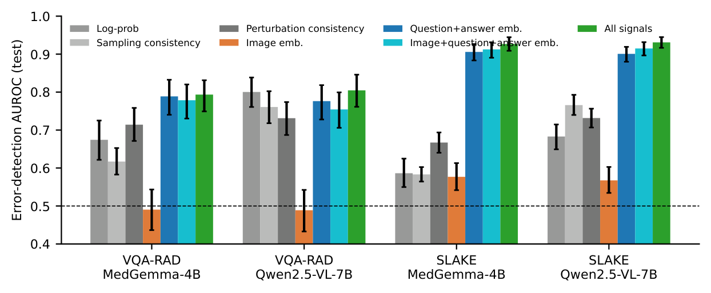
Is it just template memorisation?
SLAKE questions recur: 95 % of its test question strings also occur in training on other images. To test whether the predictor merely memorises templates, we repeat the image-grouped cross-validation while forcing identical normalised question strings into the same fold.
| Benchmark | VLM | CV grouping | #groups | Q+A (BiomedCLIP) | Q+A (TF-IDF text) |
|---|---|---|---|---|---|
| VQA-RAD | MedGemma-4B | by image | 314 | 0.79 | 0.82 |
| VQA-RAD | MedGemma-4B | by question string | 1928 | 0.80 | 0.82 |
| VQA-RAD | Qwen2.5-VL-7B | by image | 314 | 0.76 | 0.81 |
| VQA-RAD | Qwen2.5-VL-7B | by question string | 1928 | 0.77 | 0.82 |
| SLAKE | MedGemma-4B | by image | 642 | 0.93 | 0.93 |
| SLAKE | MedGemma-4B | by question string | 679 | 0.80 | 0.84 |
| SLAKE | Qwen2.5-VL-7B | by image | 642 | 0.90 | 0.92 |
| SLAKE | Qwen2.5-VL-7B | by question string | 679 | 0.80 | 0.79 |
Predictable failure is not image blindness
For every test item we re-ask the same question with no image, a uniform grey image, and a swapped image (another test image of the same modality), and we progressively blur, downsample and corrupt the real image.
| Benchmark | VLM | Score, real image | No image | Swap unchanged (%) | Score if unchanged / changed | All-5 wrong / indep. (%) | mean φ |
|---|---|---|---|---|---|---|---|
| VQA-RAD | MedGemma-4B | 64.3 | 33.3 | 51.7 | 71.9 / 56.1 | 26.8 / 3.4 | .45 |
| VQA-RAD | Qwen2.5-VL-7B | 58.8 | 33.4 | 58.3 | 67.8 / 46.2 | ||
| SLAKE | MedGemma-4B | 65.1 | 24.8 | 59.3 | 73.1 / 53.4 | 25.7 / 3.2 | .50 |
| SLAKE | Qwen2.5-VL-7B | 56.4 | 23.1 | 69.3 | 62.2 / 43.4 |
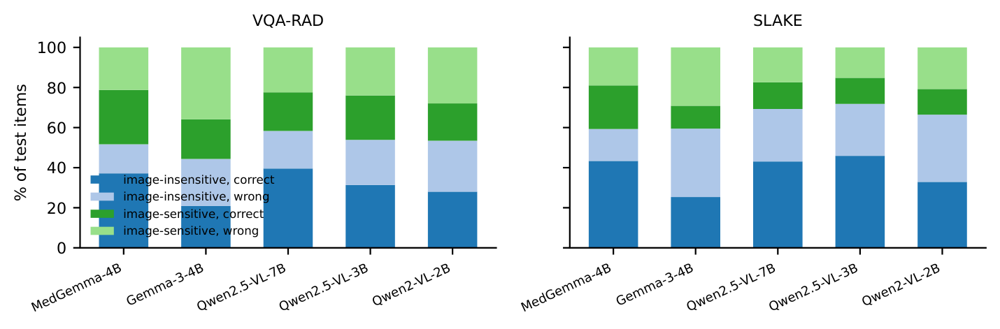
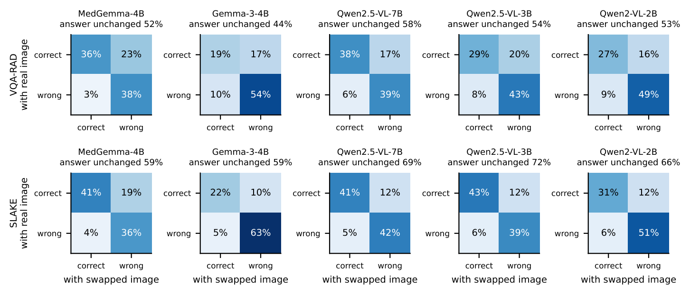
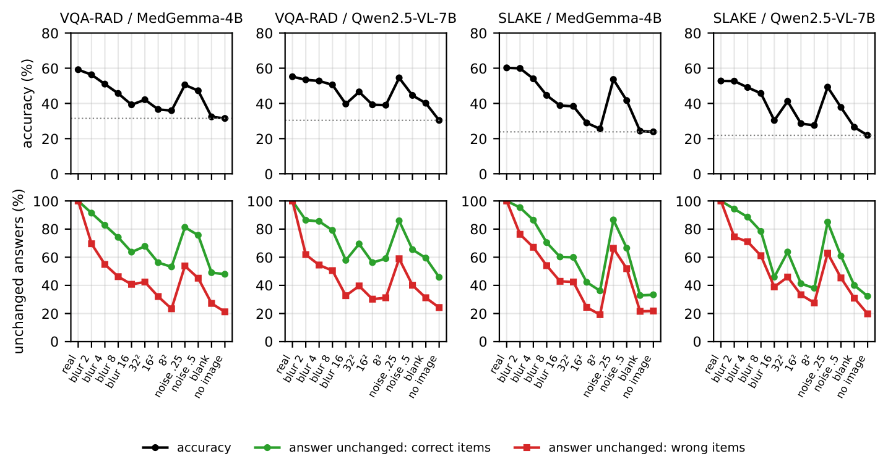
The same difficult items fail across VLMs
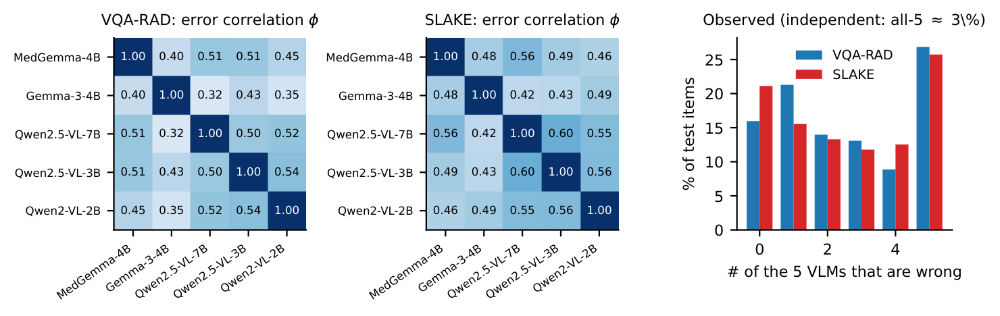
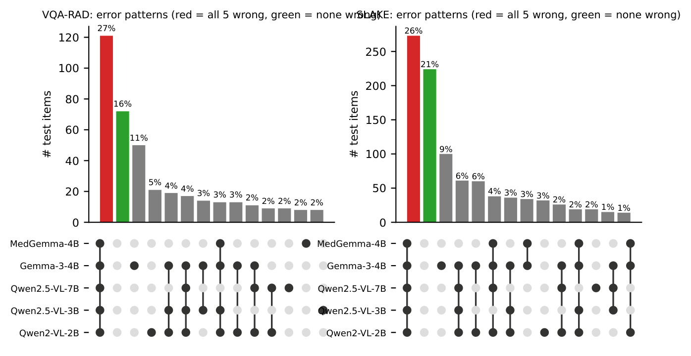
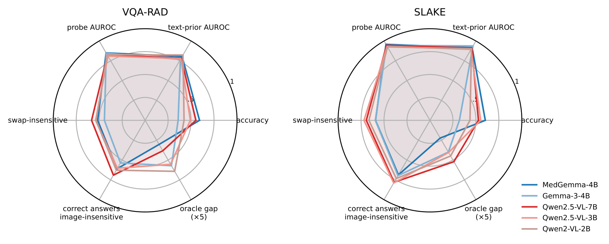
What is systematic
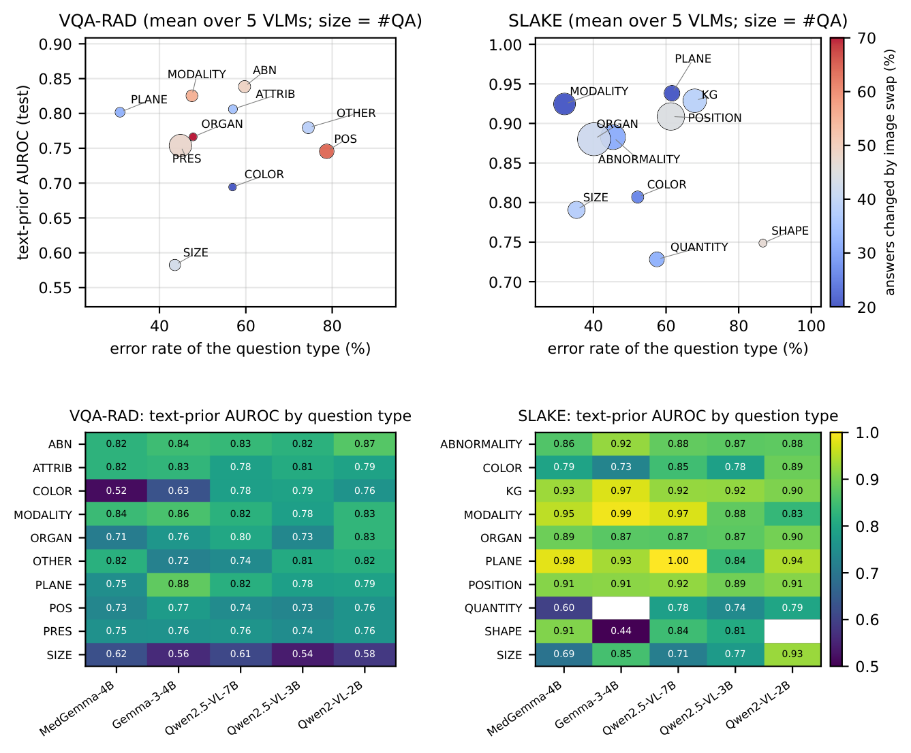
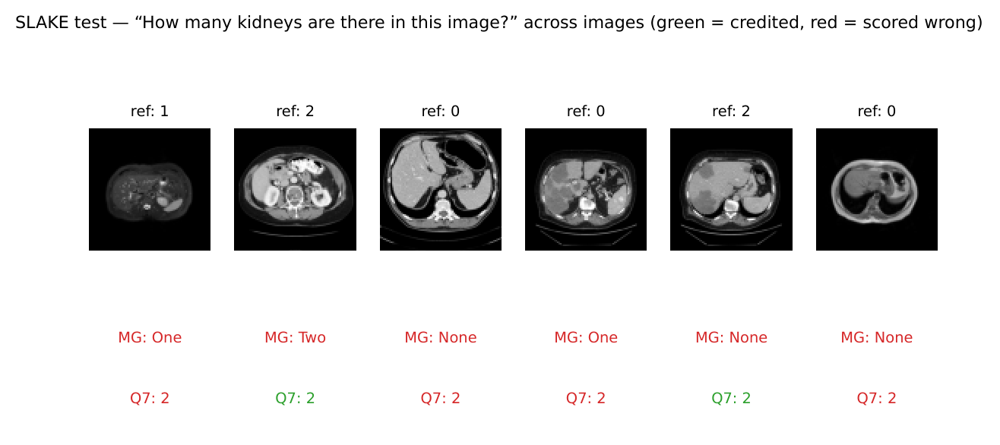
Correction headroom exists but is hard to realise
Three fixed interventions — structured re-prompting, contrast enhancement (percentile stretch + CLAHE) and multi-crop zoom — are run on every test item, together with KEEP. The per-item oracle exceeds the best fixed intervention by 4.5–10.4 Metric-A points, but KEEP is already optimal for 84–92 % of items and every intervention both repairs and damages answers. We then try to realise the headroom with learned routing and gating, consensus among re-answers, and anchored self-verification.
| Method | Metric-A score | Harmful fraction of changes (%) | |||||||
|---|---|---|---|---|---|---|---|---|---|
| VR/MG | VR/Q7 | SL/MG | SL/Q7 | VR/MG | VR/Q7 | SL/MG | SL/Q7 | ||
| Base (KEEP) | 64.3 | 58.8 | 65.1 | 56.4 | – | – | – | – | |
| Best fixed intervention (val.) | 62.9 | 60.5 | 66.3 | 59.2 | 5.8 | 2.2 | 3.2 | 8.2 | |
| Question-type router | 63.1 | 59.4 | 66.8 | 60.8 | 6.8 | 2.7 | 3.3 | 5.2 | |
| Direct ΔQ selector | 64.3 | 56.3 | 67.2 | 62.4 | 4.7 | 13.8 | 2.2 | 3.8 | |
| Gate + action classifier | 63.1 | 58.8 | 67.4 | 62.8 | 8.2 | 10.3 | 3.2 | 9.1 | |
| Gate + utility head | 64.1 | 58.2 | 67.9 | 62.4 | 5.5 | 11.2 | 2.2 | 7.9 | |
| Majority vote | 64.0 | 59.7 | 65.7 | 56.6 | 44.4 | 16.7 | 7.1 | 30.0 | |
| 2-intervention corroboration | 63.2 | 58.4 | 66.3 | 57.2 | 39.0 | 39.2 | 21.8 | 30.6 | |
| Anchored self-verification | = base | = base | = base | = base | – | – | – | – | |
| Per-item oracle | 70.4 | 68.2 | 70.8 | 69.6 | 0 | 0 | 0 | 0 | |
| Selective answering, Sel.@50 | 81 | 76 | 91 | 84 | exact accuracy of the 50 % lowest-risk answers (Q+A ranking) | ||||
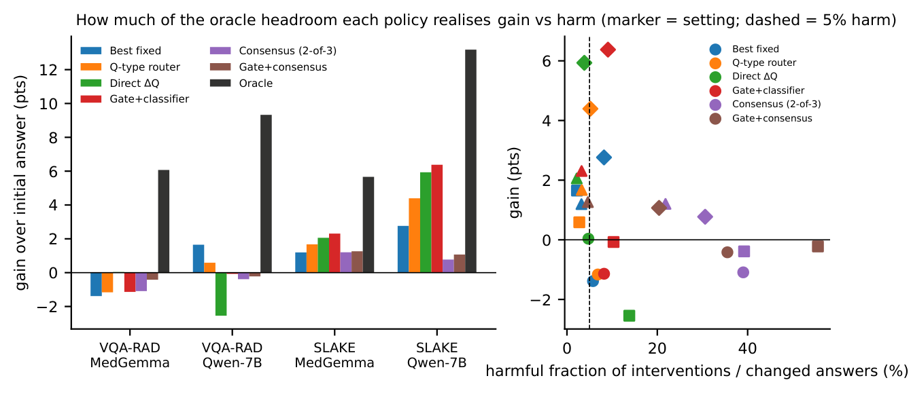
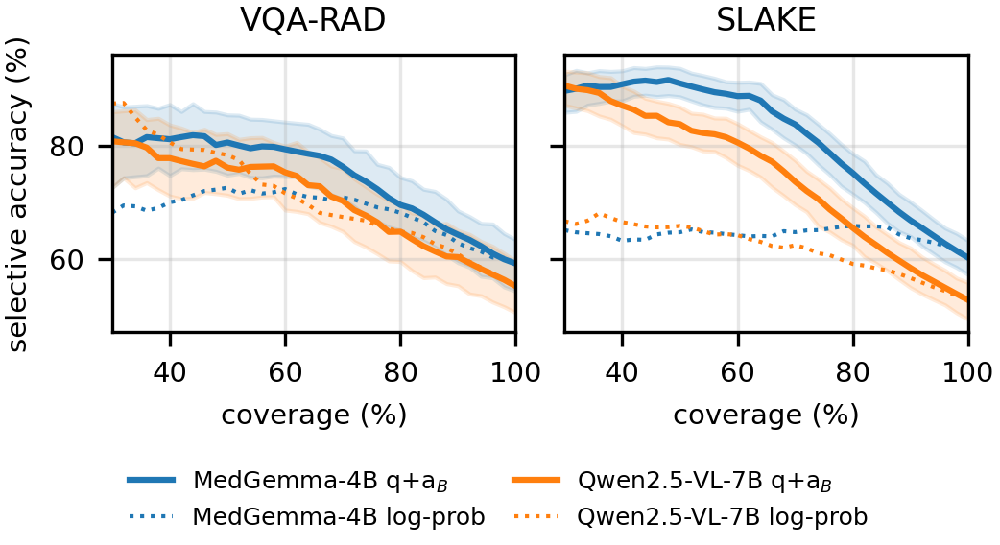
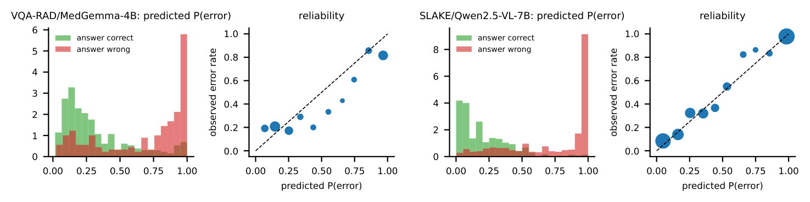
Representative cases

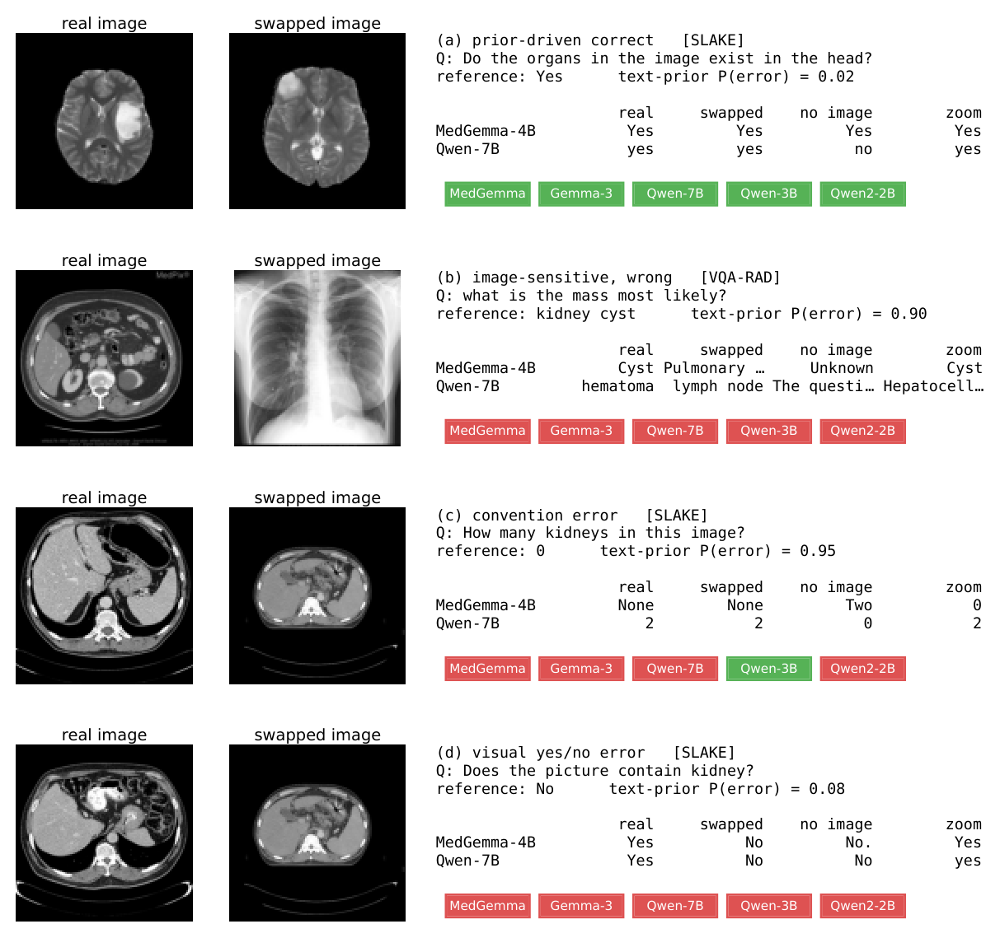
Benchmark construction moderates the effect
The same protocol run with the five VLMs on three further benchmarks (ranges over the five VLMs, official/held-out test splits):
| Benchmark | Type | Acc. (%) | Q+A AUROC | Probe | Log-p | Swap unchanged (%) | Score if unchanged / changed | Sel.@50 |
|---|---|---|---|---|---|---|---|---|
| PathVQA | templated, pathology | 23–35 | 0.89–0.92 | 0.92–0.95 | 0.46–0.76 | 28–41 | 46–52 / 17–25 | 45–66 |
| OmniMedVQA | multiple choice, 8 modalities | 60–69 | 0.73–0.81 | 0.90–0.93 | 0.62–0.78 | 62–72 | 63–76 / 54–58 | 77–84 |
| PMC-VQA | multiple choice, PubMed figures | 46–53 | 0.61–0.63 | 0.65–0.68 | 0.57–0.73 | 45–54 | 44–49 / 48–59 | 54–60 |
Reproduce
Everything above regenerates from the repository: the split files, prompts, the 22-rule canonicalisation, the pre-registered hypotheses, every result CSV, and all model generations (attached to the release so that the analyses run without a GPU).
git clone https://github.com/mtliba/VLM-ImFreeRisk.git && cd VLM-ImFreeRisk
pip install -r requirements.txt
python scripts/download_data.py # VQA-RAD + SLAKE
# unpack generations.tar.gz from the release into results/, then:
python scripts/error_predictability.py # Table 1
python scripts/repeated_question_control.py # template control
python scripts/stageA_analysis.py # counterfactuals, probe, item-vs-model variance
python scripts/degradation_analysis.py # blur / downsampling / noise
python scripts/selective_qaB_test.py # Sel.@50 and the risk-coverage figure
python scripts/paper_assets.py # every figure on this pageBibTeX
@inproceedings{tliba2027vlmfail,
title = {When will a {VLM} fail on medical {VQA}? Image-free risk prediction and shared error structure},
author = {Tliba, Marouane and Kerkouri, Mohamed Amine and Taifour, Youssra and Benyahyia, Mohamed Oussama and
Hamdan, Emadeldeen and Halimi Milani, Omid and Selam, Zakaria and Abouread, Nour and
Chetouani, Aladine and Cetin, Ahmet Enis and Beghdadi, Azeddine},
booktitle = {IEEE International Conference on Acoustics, Speech and Signal Processing (ICASSP)},
year = {2027},
note = {under review}
}